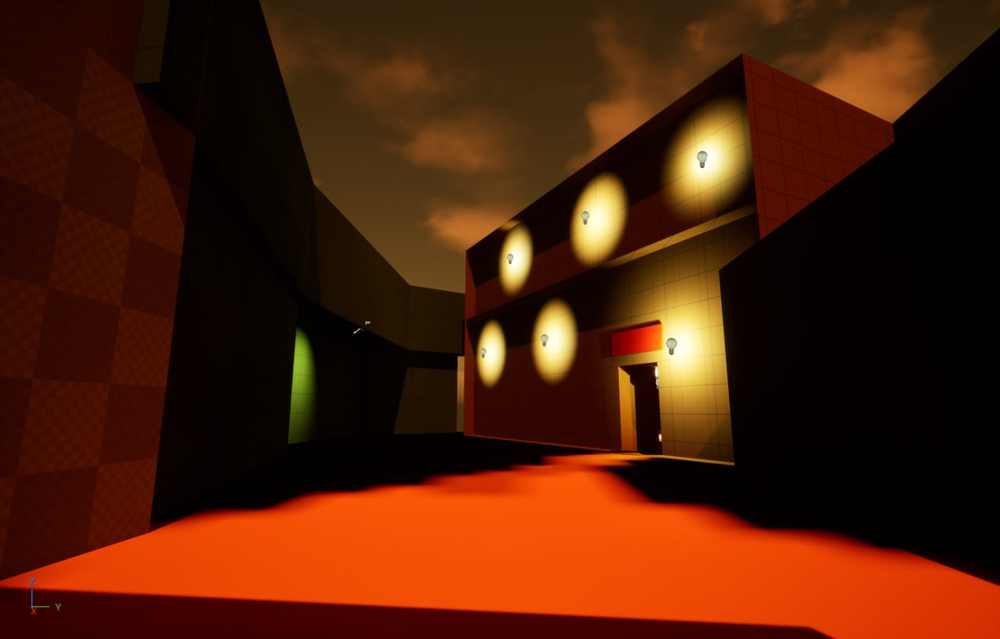
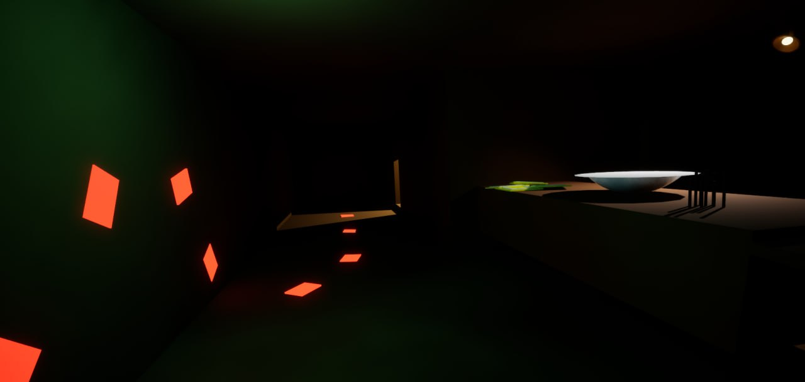
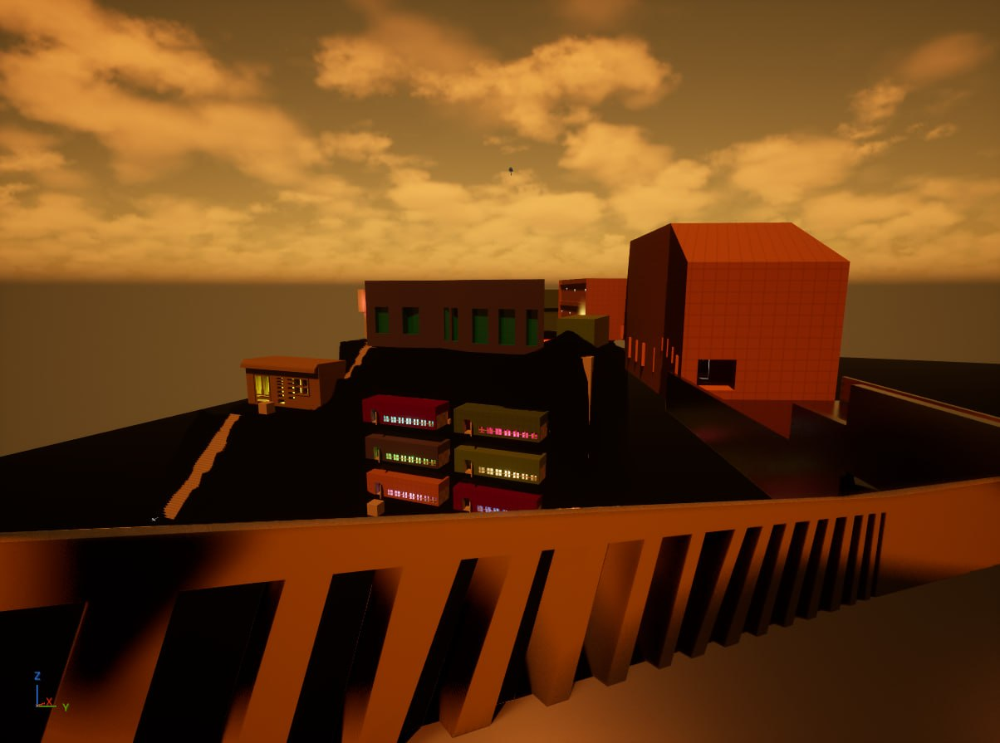
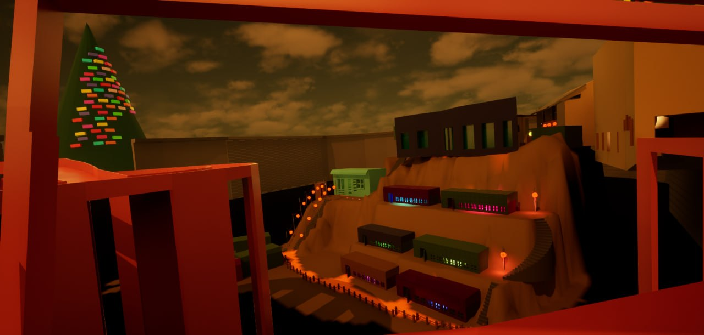

Case study · Level design
Shophouse District
A night-time horror level set in a haunted shophouse district. The player climbs a hillside of shuttered shophouses, enters a pawnshop sealed by talismans, and searches for their late mother's jade bracelet, guided by light, colour and sound instead of UI markers.
Walkthrough
The goal
Lead the player through an eerie, unfamiliar space to a single meaningful object, using lighting, colour, landmarks and audio to guide them without breaking immersion. Tight and open spaces alternate so the tension builds, releases and builds again.
Level beats
- The Ascent: establishes the eerie world and its scale. Emissive blue and pink windows lure the player toward empty “false path” shophouses, teaching them to follow the red and yellow lanterns up the staircases instead.
- The Shophouse Exterior: a courtyard gives the player room to breathe. A green neon “當舖” (pawnshop) sign foreshadows the jade, and the bright hallway inside ends abruptly at a door sealed with “封” (seal) talismans.
- The Altar: a trail of red talismans leads to the kitchen and the scissors that cut the seal. A boiling pot and a sudden muffled thump turn the domestic space tense as the player backtracks to the door.
- The Rooftop Bridge: a cramped stairwell opens onto a sudden drop and an S-curve bridge, a compression-and-release moment where muffled indoor echo cuts to harsh exterior wind.
- The Storage Room: a short maze of towering red storage racks under hanging lamps, with a final spotlight on the jade bracelet for a quiet, bittersweet ending.
Guiding the player
- Lanterns vs. neon: warm red and yellow lanterns mark the true path, contrasting with the cool blue and pink windows of the fake shophouses.
- Talisman breadcrumbs: glowing red talismans on the floor and walls re-orient the player and pull them back to the critical path.
- Foreshadowing: the green neon pawnshop sign and its backlit jewellery display hint at the final item before the player goes inside.
- Spatial audio: the boiling pot, a muffled thump, chanting at the altar and a low drone draw the player’s ear and shape the mood.
- Lighting and framing: overhead lamps light the aisles of the storage maze, and a contrasting spotlight makes the jade bracelet the focal point.
- Ground material: a brightly coloured path across the courtyard floor leads from the entrance to the shophouse door.
Scene compositions
I reworked my three scene compositions several times after playtests and feedback from teaching assistants. Each pair shows the first iteration (before) next to the final version (after).
Composition 1: the shophouse entrance


Composition 2: the shophouse interior


Composition 3: the hillside view


Iterating on the level
Across several rounds of playtesting and feedback from teaching assistants, I made these changes to make the path clearer and the story easier to read:
- Less backtracking: merged the third hill path back into the main staircase, and added an alternative route back to the sealed door that also gives the player a new view.
- Clearer guidance: added a stack of “引” (guide) talismans at the start to introduce them, scattered the talismans along the path as if dropped, and added footprints leading to the scissors on the altar table.
- Environmental storytelling: a burnt talisman on a plate with a lighter, a letter on the corridor wall explaining why the player is there, and the mother’s name and dates on the altar plaque.
- Atmosphere: added whispers of spiritual beings once the sealed door opens, plus three landmark scene compositions (shown above).
- Lighting fixes: softened the light at the trellis viewpoint, and narrowed the warehouse light cones to stop reflections off the blue wallpaper.